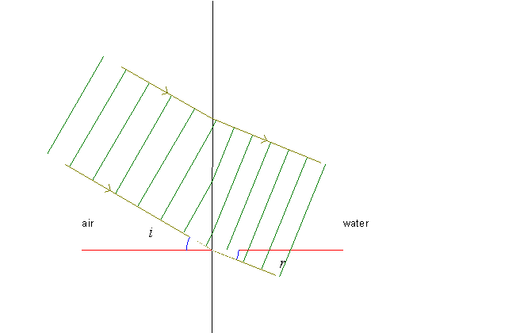

What happens when light is refracted as it passes from air into water? On the above picture, the green lines represent wave crests. Notice that the wavelength is smaller in water than in air. On the panel to the left of the main program, you can change the angle of incidence i, the color of the light and you can make the wave fronts move by clicking the »Go« button. The latter is the most important for now. You will see that the speed of progression in water is smaller than in air. You cannot see that on the above picture, but you can see it in the Rainbow program as the wave propagates!
As with refraction, this simulation also has explanation and questions in the memo and data in the table.
Table:
| Refraction in water | |
| refractive index, n | 1,334 |
| wavelength/nm, green | 546,1 |
| incident angle i/° | 30,0 |
| refracted angle r/° | 22,0 |